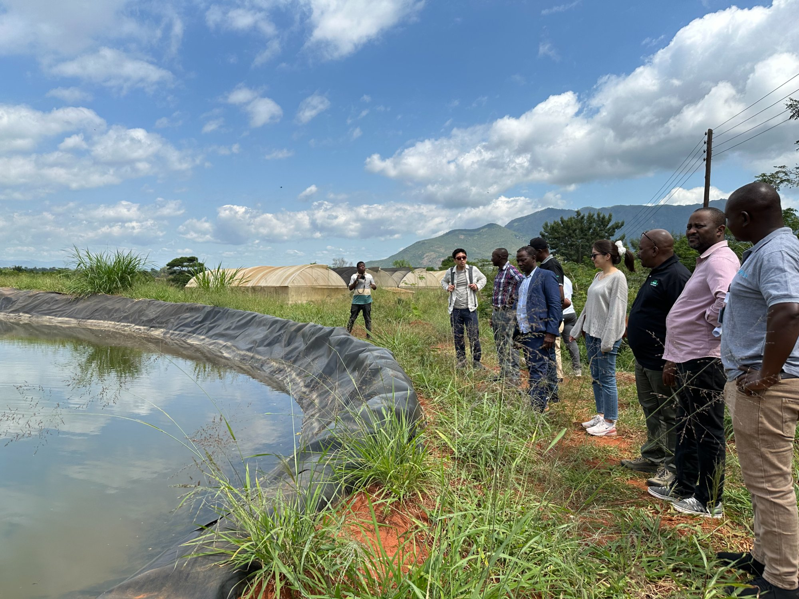
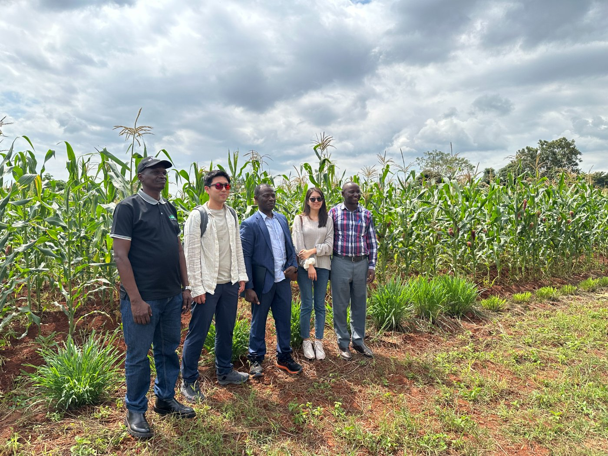
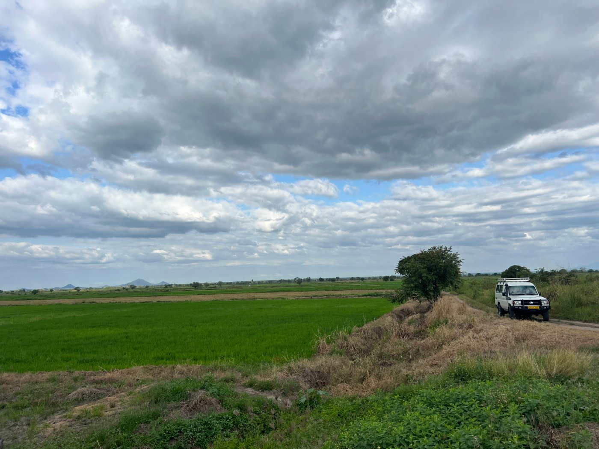
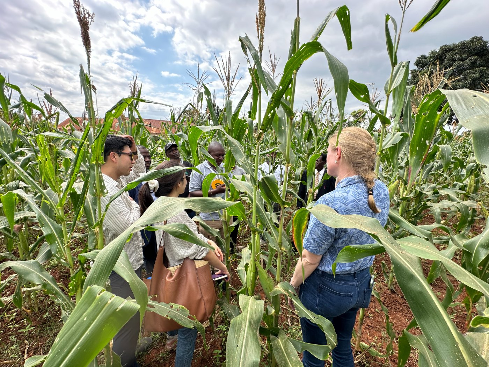

The Impact Evaluation Lab generates causal evidence on what works in development — through randomized evaluations and rigorous quasi-experimental research — and brings that evidence to policymakers in Korea and around the world.

Good development policy depends on knowing not just what happened, but what would have happened without the program — the counterfactual. The Impact Evaluation Lab, a research lab under the KDI School of Public Policy and Management, brings together faculty and researchers who use experimental and quasi-experimental methods to answer that question across agriculture, education, health, governance, labor, and finance.
The Lab partners with governments, international organizations, and NGOs — including the World Bank's Development Impact Group (DECDI) — to design evaluations, build evidence, and train the next generation of researchers and policymakers.


